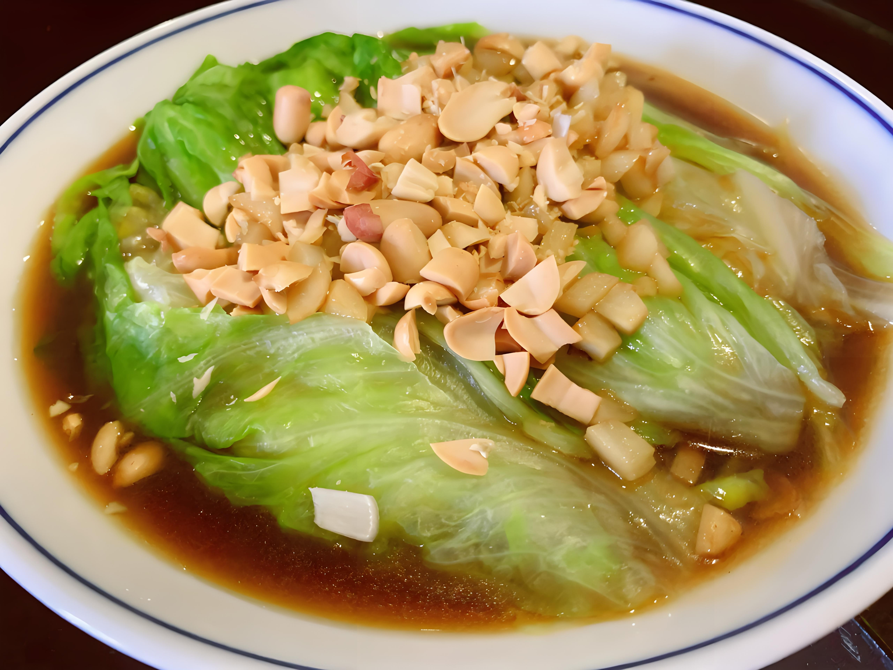

| 食材 |
克数 |
| 生菜叶 |
200克 |
| 蚝油 |
2勺 |
| 香菇（切丝） |
100克 |
| 胡萝卜（切丝） |
1根 |
| 姜蓉 |
1勺 |
| 蒜蓉 |
1勺 |
| 食用油 |
适量 |
| 盐 |
适量 |
| 胡椒粉 |
适量 |
烹饪步骤
- 生菜叶洗净备用。
- 锅中加入适量食用油，爆炒姜蓉和蒜蓉至香味四溢。
- 加入香菇丝和胡萝卜丝，翻炒至蔬菜变软。
- 加入蚝油，搅拌均匀。
- 将蔬菜炒好的馅料包入生菜叶中，形成生菜包。
- 撒上适量盐和胡椒粉，即可食用。
备注
- 这款蚝油生菜包清新爽口，适合作为素食小吃或开胃菜。
- 食用时可根据个人口味加入一些香菜或花生碎提味。
参考链接
返回主页
开始计时
停止计时
00:00:00